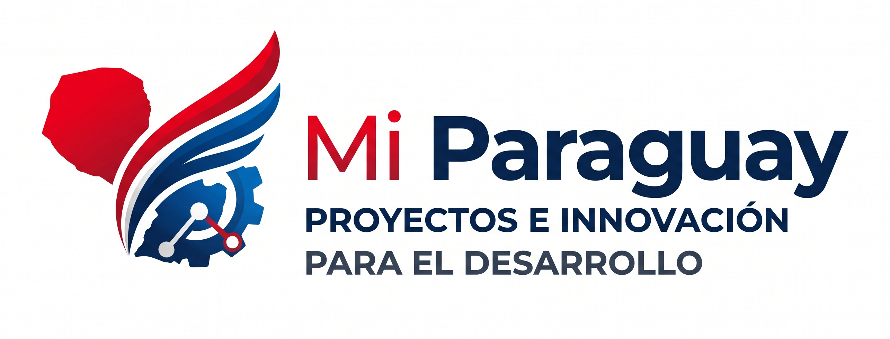
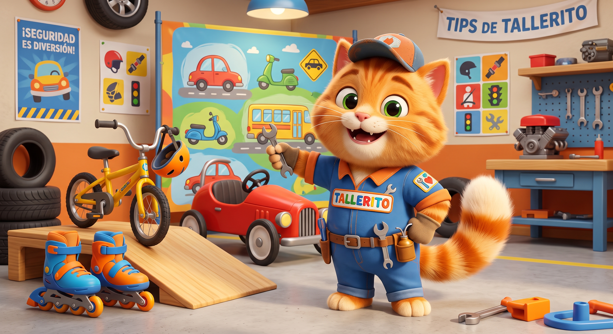
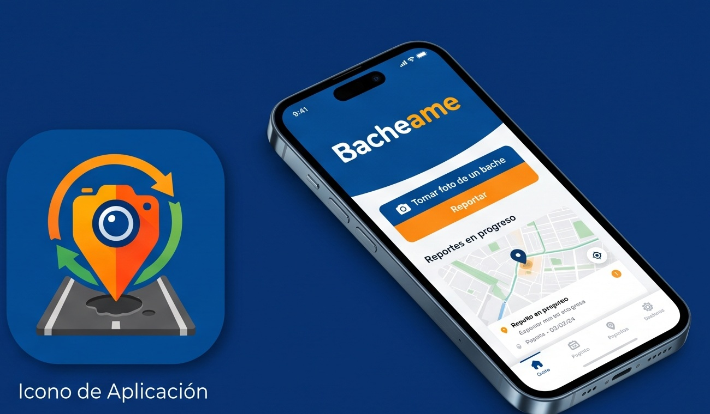

Detectamos una mejora posible
Partimos de un problema concreto del país y diseñamos una respuesta que pueda medirse, probarse y mejorar.

Mejora continua para el país
Mi Paraguay convierte conocimiento ciudadano en proyectos concretos que generan valor público y construyen su propia sostenibilidad.
Profesionales que aportan su intelecto al bien común, sin depender de partidos políticos, favores ni presupuesto público.
Nuestro modelo
Partimos de un problema concreto del país y diseñamos una respuesta que pueda medirse, probarse y mejorar.
Profesionales, empresas e instituciones aportan experiencia, capacidad de ejecución y financiamiento privado.
Cada iniciativa busca cubrir sus costos y reinvertir el valor que genera en nuevas mejoras para Paraguay.

Ikuaa Lo Mitã
Un programa gamificado para estudiantes de 7 a 18 años, con currícula por edades, puntos, insignias, un torneo intercolegial y contenidos propios en YouTube.
El problema en números
Las cifras oficiales no son una proyección: registran fallecidos en 2023 y personas atendidas por el Hospital de Trauma en 2024.
personas de 15 a 19 años fallecieron en siniestros viales
Paraguay, 2023lesionados tenían entre 15 y 24 años
Hospital de Trauma, 2024de los lesionados eran motociclistas o acompañantes
Hospital de Trauma, 2024personas fallecieron en siniestros viales durante el año
Paraguay, 2023El riesgo también aparece en las denuncias
Un análisis preliminar de 21.997 denuncias por exposición al peligro en el tránsito terrestre registradas entre 2023 y el 28 de diciembre de 2025 también identificó a 3.739 menores de 17 años entre los involucrados.
Fuente: Observatorio del Ministerio Público, citado por ABC ColorPor qué importa
En un cruce de Fernando de la Mora, un motociclista de 18 años perdió la vida y otro joven, de 19, quedó involucrado en un hecho que también cambiará su futuro para siempre.
La educación vial debe llegar antes del primer vehículo, antes de la primera licencia y antes de que una decisión de segundos tenga consecuencias irreversibles.
Ningún programa puede asegurar que un siniestro concreto habría sido evitado. Sí podemos enseñar a reconocer el riesgo, anticipar una maniobra y entender la responsabilidad de compartir la vía pública.
Fuente del caso: ABC Color, 18 de septiembre de 2026
Bacheame
Una aplicación paraguaya para teléfonos Android que permitirá fotografiar un bache desde un lugar seguro, registrar su ubicación exacta y compartir el caso con la municipalidad correspondiente.
Una convocatoria anual abierta para que cualquier persona pueda presentar una idea de mejora continua para Paraguay. Los resultados de los proyectos impulsados por Mi Paraguay ayudarán a financiar la propuesta ganadora y a reconocer las tres mejores iniciativas.
Hagámoslo posible
Podés llevar un proyecto a tu institución, aportar conocimiento, presentar una propuesta o ayudar a sostener estas iniciativas.
Quiero ser auspiciante